多模态大模型后训练综述¶
📄 论文：A Survey on Post-Training of Multimodal Large Language Models
作者：Haonan Zhang, Pengpeng Zeng, Libin Cao, Wenrui Lai, Jinlong Li, Duo Peng, Yi Bin, Xuanhan Wang, Ji Zhang, Jingkuan Song, Nicu Sebe, Yuchuan Wu, Yongbin Li, Heng Tao Shen, Jieping Ye
机构：同济大学、阿里巴巴、西南交通大学、University of Trento、ETH Zürich
发表：Preprints, 2026.07
主页：https://zchoi.github.io/MMPoT-Survey/
GitHub：https://github.com/zchoi/Awesome-Post-Training-for-MLLMs
PDF：../pdf/post_training_mllm_survey.pdf
目录¶
- 核心要点
- 一、引言：什么是 MLLM 后训练
- 二、五大后训练方法族
- 2.1 Instruction Following（指令跟随）
- 2.2 Preference Calibration（偏好校准）
- 2.3 Reason Enhancement（推理增强）
- 2.4 Domain Adaptation（领域适配）
- 2.5 Scalable Training（可扩展训练）
- 三、评估与 Benchmark
- 四、未来方向与挑战
- 五、总结
核心要点¶
- 统一视角：这篇综述把 MLLM 后训练重新定义为"多模态行为塑造（multimodal behavior shaping）"，关注"Refine & Update"与"Source & Feedback"两个闭环。
- 五大方法族：现有 MLLM 后训练方法被系统归纳为：Instruction Following、Preference Calibration、Reason Enhancement、Domain Adaptation、Scalable Training。
- 演进脉络：从 SFT 模仿学习 → RLHF/RLAIF/DPO 偏好对齐 → R1-style 可验证奖励推理 → 自进化/蒸馏。
- 评估体系化：按行为目标分类 benchmark，并区分 reference-based 与 judge-based 两类评估指标。
- 未来方向：原生多模态后训练、可信评估、通用智能的 post-training scaling、持续世界流式理解。
一、引言：什么是 MLLM 后训练¶
大规模多模态预训练为 MLLM 奠定了基础感知与跨模态表示能力，但预训练本身无法保证模型行为与人类意图、伦理原则和真实任务需求对齐。
后训练（Post-training） 的定位是：在预训练之后，面向任务和指令的监督/反馈阶段，把预训练能力转化为可靠、可控、对齐的行为。
从优化角度看，后训练试图在效用 \(U\) 与约束 \(C\) 之间做最大化：
其中 \(x_m\) 是多模态输入，\(x_t\) 是文本输入，\(y\) 是模型输出。
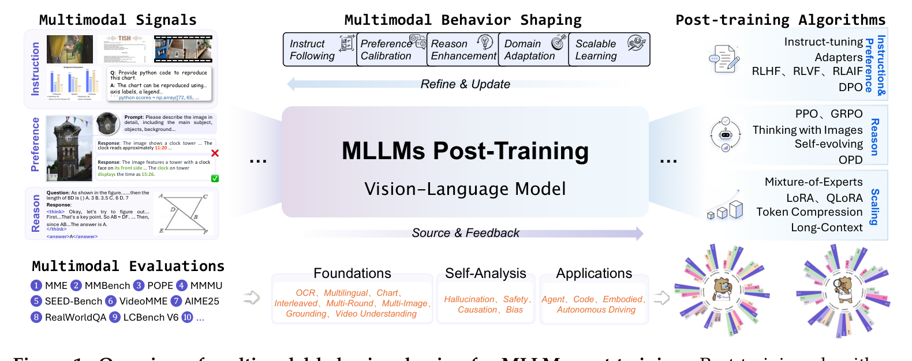
Figure 1: MLLM 后训练的"多模态行为塑造"总览。为什么需要专门综述：此前综述多从应用或单一技术范式出发，缺乏统一框架解释"不同反馈源、优化目标、更新组件、评估协议"之间的关系。本文提出 behavior-shaping 视角填补这一空白。
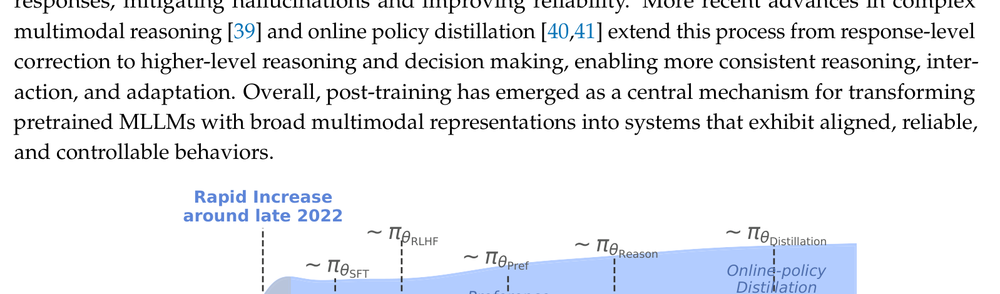
Figure 2: MLLM 后训练发展的关键里程碑时间线。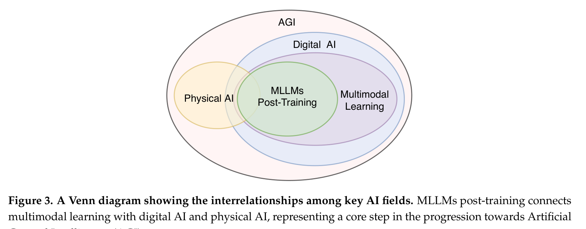
Figure 3: 多模态学习、Digital AI、Physical AI 与 AGI 的 Venn 关系图。二、五大后训练方法族¶
2.1 Instruction Following（指令跟随）¶
核心：通过视觉-语言指令-回复对进行 SFT，把原始多模态表示转化为任务导向的指令跟随分布。
发展阶段：
- Visual Adaptation to LLMs：LLaVA 的两阶段对齐（CLIP → Vicuna embedding）、MiniGPT-4 的轻量投影、mPLUG-Owl 的模块化图像条件设计、InstructBLIP 的指令感知 Q-Former。
- Instruction-Aware Visual Injection：LLaVA-1.5 通过更优数据混合、更高分辨率与训练配置提升可复现性；LaVIN、LLaMA-Adapter V2 探索高效适配。
- Fine-grained Instruction Tuning：GPT4RoI、Shikra、Ferret、Kosmos-2 引入区域/定位级视觉信息。
- Beyond Images：Video-LLaMA、Valley、LLaVA-OneVision、Qwen2.5-VL、InternVL3 把指令调优扩展到视频、多图、交错输入等全栈多模态场景。
Instruction Data Mixtures：
- 文本-多模态平衡（LaVIN、MultiInstruct）
- 多模态数据内部组成（LLaVA-1.5、ShareGPT4V、Cambrian-1）
数据混合策略对最终性能影响显著。
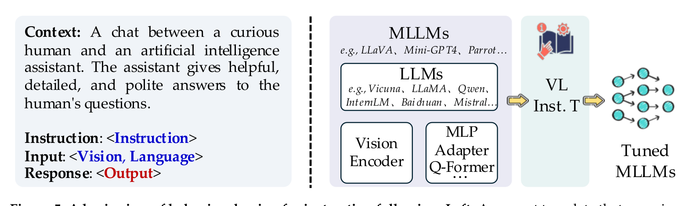
Figure 5: Instruction Following 行为塑造流程。2.2 Preference Calibration（偏好校准）¶
目标：利用人类或 AI 反馈区分更优回复，减少幻觉、增强视觉 grounding、对齐用户意图。
RLHF¶
奖励机制分为两种：
- Outcome Reward Model（ORM）：对最终答案打分，如 LLaVA-RLHF。
- Process Reward Model（PRM）：对中间推理步骤打分，如 VisualPRM。
策略学习在 KL 散度约束下最大化奖励：
代表方法：LLaVA-RLHF、RLHF-V、MM-RLHF、Seed1.5-VL、MiMo-VL。
RLAIF¶
用 AI 评估器替代/补充人类标注，降低多模态偏好标注成本。代表方法：VLM-RLAIF、RLAIF-V、Oracle-RLAIF。
Multimodal DPO¶
避免显式奖励模型，直接从成对偏好学习。演化出多个子方向：
| 子方向 | 代表方法 |
|---|---|
| Response-level | Silkie、Video-DPO、ISR-DPO |
| Hallucination-aware | HA-DPO、V-DPO、CLIP-DPO、CHAIR-DPO |
| Modality-conditioned | mDPO、MoD-DPO、OmniDPO |
| Hard-negative | DA-DPO、UE-DPO、OPA-DPO |
| Listwise | LPOI |
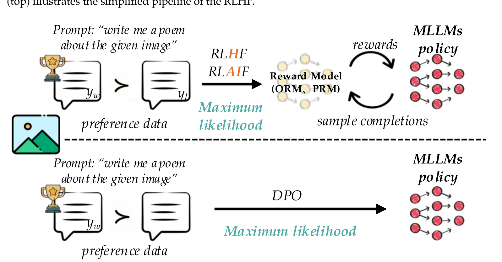
Figure 6: Preference Calibration（RLHF/RLAIF/DPO）流程。2.3 Reason Enhancement（推理增强）¶
动机：偏好校准仍不足以解决多步推理、数学推理与长程决策问题。受 o1 / DeepSeek-R1 启发，研究转向可验证奖励的强化学习。
R1-Based Multimodal Reasoning¶
生成结构通常为：
<think> r </think><answer> a </answer>
奖励分解为答案正确性 \(r_{\text{ans}}\) 与格式合法性 \(r_{\text{fmt}}\)：
两种范式：
- R1-Zero：直接用 GRPO/RLVR 触发推理，如 VisualThinker-R1-Zero、MM-Eureka、ThinkLite-VL。
- R1：cold-start SFT + RL，如 Vision-R1、Skywork-R1V、R1-Onevision、Retrv-R1、R1-Omni、VLM-R1。
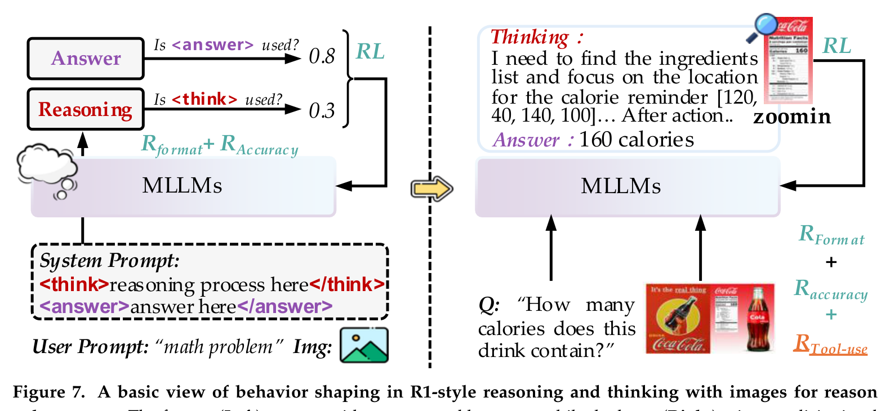
Figure 7: R1-style Reasoning 与 Thinking with Images。Thinking with Images¶
把图像作为主动推理媒介：
- Visual Evidence Grounding：GRIT、Point-RFT、VisionReasoner
- Visual Tool Use：OpenThinkIMG、DeepEyes、VTool-R1
- Latent Visual Reasoning：LanteRn、GoT-R1
Self-Evolution for Multimodal Reasoning¶
- Self-Generated Data：VIGC、MM-Instruct、MindGYM
- Reflection/Critique：R3V、SRPO、LLaVA-Critic、MMEvol、V-Reflection
- Verifier-Guided：MM-UPT、SelfJudge、AGILE、Jigsaw-R1、LLaVA-Critic-R1
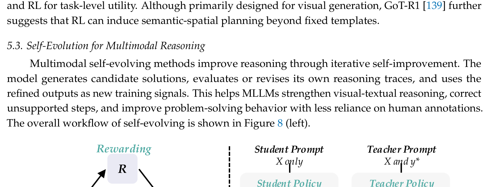
Figure 8: Self-Evolving 与 Distillation。Efficient Reasoning¶
- Knowledge Distillation：LLaVA-KD、LLAVADI、Silkie、LLaVA-MoD
- On-Policy Distillation：Video-OPD、X-OPD、Uni-OPD、Vision-OPD、VA-OPD
2.4 Domain Adaptation（领域适配）¶
目标：把预训练 MLLM 特化到数据分布、任务协议和可靠性要求不同的领域。
| 领域 | 代表方法 | 关键挑战 |
|---|---|---|
| GUI Agents | Mobile-Agent、GUI-R1 | 感知+规划+动作，R1-style RL + 规则奖励 |
| Document / High-Resolution | mPLUG-DocOwl1.5、LLaVA-UHD | 布局理解、高分辨率感知 |
| Medical | Med-Gemini | 临床推理、EHR 整合 |
| Resource-aware | AdaMLLM | 领域与资源约束下自适应推理 |
领域适配需同时考虑数据分布、视觉粒度、任务接口与可靠性。
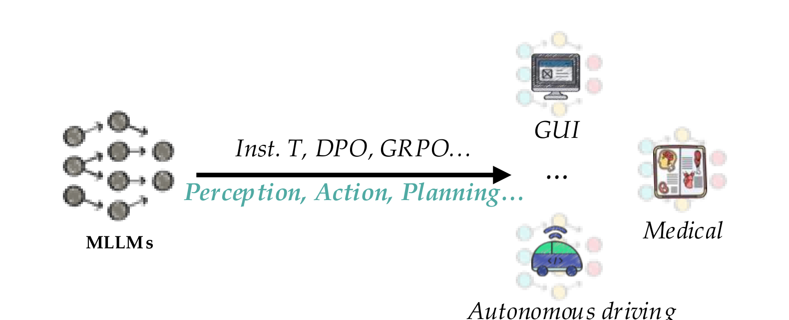
Figure 9: Domain Adaptation 行为塑造示意。2.5 Scalable Training（可扩展训练）¶
目标：在不反复全量更新模型、不依赖昂贵监督的前提下，规模化地塑造 MLLM 行为。
Parameter-Efficient Post-Training¶
LoRA：
- LLaVA-LoRA、LLaVA-MoLE、MixLoRA、MokA、LiLoRA
- 通过低秩适配减少可训练参数，降低后训练成本。
MoE：
- MoE-LLaVA、Qwen3-Omni、Qwen3-VL、MiniMax-01、MoExtend
- 通过专家混合扩展模型容量，同时控制激活参数。
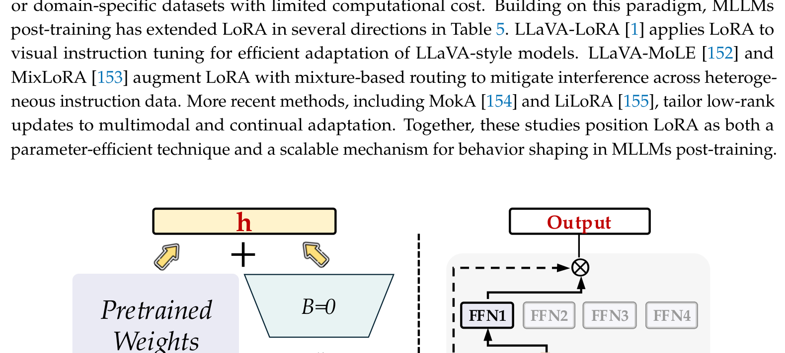
Figure 10: Parameter-Efficient Post-Training（LoRA / MoE）。Compute-Efficient Post-Training¶
- Efficient Visual Processing：LLaVA-UHD、AdaMLLM/AdaLLaVA、InternVL2
- Token Compression：FastV、VisionZip、SparseVLM、TRIM、TokenPacker
- Long-Context Optimization：LongVU、LongVILA、LongVA、VideoChat-Flash
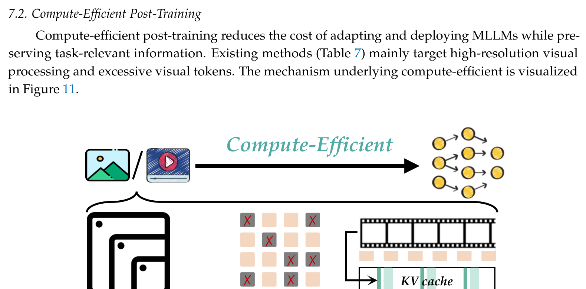
Figure 11: Compute-Efficient Post-Training。三、评估与 Benchmark¶
论文按行为目标把 benchmark 分为四类：
| 后训练目标 | 代表 Benchmark |
|---|---|
| Instruction Following | LLaVA-Instruct-150K、ShareGPT4V、SEED-Bench、MM-Vet、MMBench、MME、MM-IFInstruct、VC-IFInstruct |
| Preference Calibration | POPE、MMHal-Bench、HallusionBench、Lingua-SafetyBench、MM-SafetyBench、LLaVA-RLHF、RLHF-V |
| Reason Enhancement | ScienceQA、AI2D、CLEVR、MMMU、MathVista、MathVision、OlympiadBench、PuzzleBench、MME-CoT、MME-Reasoning |
| Domain Adaptation | DocVQA、OCRBench、ChartQA、Mind2Web、ScreenSpot，以及医学/GUI/视频/高分辨率相关 benchmark |
评估指标：
- Reference-Based Metrics：精确匹配、准确率、F1、mAP/IoU、BLEU/CIDEr/ANLS；MMBench 的 circular evaluation、MMMU 的 log-probability scoring、MathVista / MME-CoT 的 reasoning-aware evaluation。
- Judge-Based Metrics：人工或 LLM/MLLM 作为评判者，分为 score-based（MM-Vet、MMHal-Bench）与 comparison-based（LLaVA-RLHF、RLHF-V、VLFeedback/Silkie）。
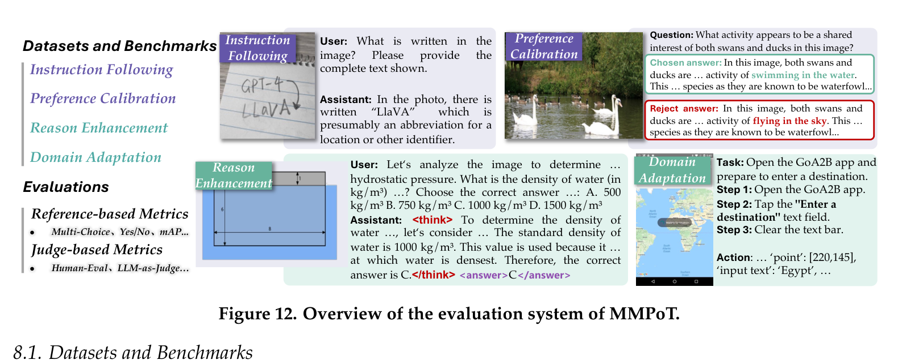
Figure 12: MMPoT 评估系统总览。四、未来方向与挑战¶
4.1 Grounded Behavior Shaping¶
- Native Multimodal Post-Training：当前大多以语言监督为中心，未来应保留空间布局、时序连续性、声学线索等模态特有结构。
- From Digital Understanding to Physical Interaction：让模型从"描述多模态输入"走向在动态环境中做接地决策。
4.2 Reliability-Aware Evaluation¶
- Trustworthy Evaluation：不能只看 benchmark 准确率，还需诊断幻觉、校准、一致性、安全性、分布偏移下的鲁棒性。
- Complex Real-world Scenarios：构建包含模糊证据、长程上下文、变化环境与交互约束的真实场景 benchmark。
4.3 Scaling for Generalization¶
- Post-training Scaling toward Generalist MLLMs：scaling 不仅是数据量和算力，更要实现跨任务、跨领域、跨模态、跨交互设置的行为迁移。
- Streaming Understanding of a Continuously Unfolding World：支持持久记忆、时序事件抽象、选择性检索、在线反馈与持续适应，避免灾难性遗忘和模型漂移。
五、总结¶
这篇综述从"多模态行为塑造"的统一视角系统梳理了 MLLM post-training 的全景：
- Instruction Following 激活预训练能力，让模型学会遵循指令。
- Preference Calibration 对齐人类/AI 偏好，减少幻觉和不对齐行为。
- Reason Enhancement 通过 R1-style 可验证奖励强化学习提升多步推理。
- Domain Adaptation 把通用模型特化到具体领域。
- Scalable Training 让后训练在参数和计算上更高效。
这五个方向形成闭环，共同把预训练 MLLM 塑造为可靠、接地、任务导向的多模态智能体。文章最后指出的原生多模态后训练、可信评估、通用智能 scaling 和持续世界理解，正是当前该领域最关键的前沿问题。